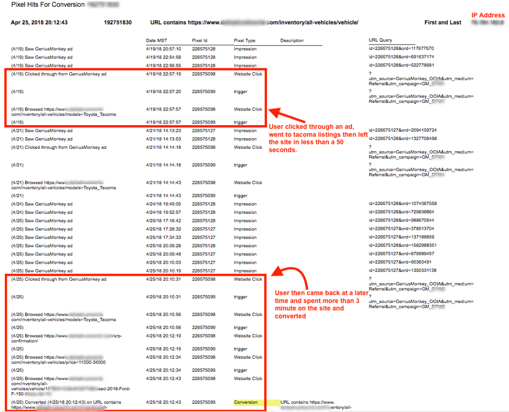

General
- Simply put, we’re an ad platform built for results…proven results. Genius Monkey places your digital ad or brand message in front of more high-value prospects for far less money than any of our competitors can. And most importantly, we have the attribution and reporting to back it up.
- Genius Monkey® is a digital advertising technology firm with an advanced full service ad platform. We partner with businesses who have a product, service or message they want to introduce to the world, and put their brand’s message directly in front of targeted consumers (meaning those who’ve shown a high potential to engage) at the lowest possible cost. We also work with agencies, media outlets, news companies and more as their programmatic partner for their own clients. Learn more about our platform.
- Our ideal client or user would be any company (Brand, B2B, eCommerce etc.) with a compelling product, service or message that’s looking to identify, find and engage a specific target audience or demographic in the most efficient way possible. Getting your brand or message in front of customers who’ve shown high conversion potential is our specialty.
- Like all advertising it performs at a much higher rate with more rounded and diverse marketing campaigns. For example we always recommend that you be running a Search/PPC campaign with any type of advertising and especially programmatic since your audience is being branded like never before and if they don’t click the banner or video ad they will do a search for you when ready and you must be there at that time.
- Our clients and users will see immediate key performance indicators (KPI’s) such as immediate online traffic, new users, leading conversions, etc within just a few days of launching. Campaigns generally see positive impacts on things such as ROAS, ROI, Cost-Per-Click and Cost-Per-Conversion within the first 30 days. But it can take 90 days or more, depending on the vertical and sales funnel set up to see quantifiable results and the full capability and power of our advertising efforts.
- Proven and sustainable results take real time, so we strongly encourage our clients to stay committed to their campaigns for the long haul, or at least the first three months. The longer you stay committed, the stronger your brand will grow. Thus building your own economy. Note, other client or business items such as their website structure or sales funnel, other types of marketing more can play a significant role in your overall success.
- In short, it doesn’t. From the beginning, we’ve maintained a flexible and diverse approach to all advertising efforts, so we’ve never relied on cookies alone for our targeting success. Check out our published article in Forbes for more detailed information.
A few best practices in terms of ad approvals and successful campaigns are below:
- Accessibility - Supporting keyboard navigation on your website and using contrasting colors is helpful for users with disabilities.
- Privacy Policy/Terms & Conditions - Having this on a site is generally required by all networks to get approval. It’s important for clients and users to know exactly what kind of data is being collected and how that data is being used. Privacy policies often look the same and basically have the same content. Here are a couple of examples: https://www.geniusmonkey.com/terms-of-service https://www.geniusmonkey.com/privacy
- One-Page Sites/New domain specifically for a campaign - Many clients like the idea of creating a separate domain for each vendor. While being able to easily track ad engagement might sound like a good idea, it ultimately makes for a poor user experience and lack of transparency. Users like to be able to do additional research on a product or company before filling out a form–which is hard to do if there’s only one page to a website and doesn’t provide much information. Not to mention almost impossible to get back to without bookmarking the page. New domains are also a bit of an issue when users are trying to navigate back to a previously-visited site or specific page. Is the new domain accessible from your main domain? Can the main client domain be accessed from the new domain?
Offerings
- Optimize Display includes normal banner ads, as well as rich media ads, native ads and social media ads, bringing your holistic online advertising into one campaign that reaches all devices.
- This programmatic display advertising is not only the most targeted platform you will find, but also prides itself on the media agnostic approach in bringing in all available DSP’s and networks to reach your target audience anywhere and everywhere.
- Optimize Display works on a CPC/CPE (cost per click) model where you only pay when your target audience sees your ad and engages with it.
- Optimize Video is programmatic advertising through the awesome power of video, evolved.
- Place your TV spots in front of consumers who are most likely to buy (with all the same unlimited targeting capabilities)
- Only pay when someone engages with your video, which means watching at least 30 seconds through or clicking on it.
- Realize a 24% increase in brand recall through utilization of a multi-screen campaign.
- Optimize Video is more efficient than traditional television and fully measurable, with insights into how long people watch your video and the number of people who take action.
- According to Pew Research Center, nearly a quarter (24%) of Americans do not subscribe to paid TV–and the numbers keep growing.* REFERENCE PEW RESEARCH CENTER
- Same principle as Optimize Display in that we partner and integrate with most DSPs and networks available, and serve video ads agnostically based on where the user is at, not where we think they will be. In other words, if user X is on foxnews.com, yahoo.com and an iPhone app at the same time, we may have access to them on one of those sites through multiple networks. The algorithm then evaluates which site placement and network is the most cost-effective, and places the ad accordingly. It could be placed on all three screens or simply the most efficient at that time.
- Clients only pays for video ad placement if the video is clicked on, viewed to completion, or viewed for at least 30 seconds. Thus, you don’t pay for the impression unless 30 seconds of the video is viewed which results in higher level of branding.
- Without the repetition coming from display, the other means can be easily forgotten, so we need that reinforcement. With display and video combined, however, we see phenomenal results. Many of our clients see a 24% lift in recall for multi-screen campaigns! The last thing we look to add into your campaign is OTT (Over-The-Top), which is a powerful way to engage with more audiences from yet another medium, specifically those that are cord cutters or cord shavers.
- The more angles we can hit targeted viewers from, the more confident and comfortable those viewers will feel about doing business with our brand. So it’s critical that we engage audiences through all of those mediums, whenever possible.
Definitions:
- OTT (Over The Top) - OTT refers to content distributed from a video provider to a connected device over the Internet outside the closed networks of telecom and cable providers. OTT provides access to streaming film and TV content (often referred to as episodic content) that appears on any screen other than linear TV. OTT can be understood as simply a delivery channel, or highway if you will, to provide access to serve ads “Over The Top” of an ad that would otherwise be seen during the consumption of episodic content.
- CTV (Connected TV) - CTV simply refers to a device type that allows video to be watched on a TV set with internet connectivity. This includes smart TVs, Roku, Apple TV, Fire TV stick/box, gaming consoles (such as PS4 & Xbox One) and many more.
Optimize OTT+CTV allows you to take a far more targeted and measurable approach when compared to linear/traditional television. Genius Monkey’s numerous behavioral data partnerships allow advertisers to reach their ideal customers and understand how well their campaigns perform due to our Genius Monkey proprietary Attribution Tracking technology. Our attribution technology tracks users who complete a conversion on a client’s website after previously viewing an OTT+CTV ad.
- Optimize Audio refers to programmatic ads played on audio publishers including, but not limited to: Spotify, Pandora, Soundcloud, TuneIn, IHeartRadio, ESPN Radio, Podcasts, Adswizz, Triton, Rubicon, and more.
- With Optimize Audio you can reach your target audience wherever they go! Be it while they’re exercising, commuting to work, relaxing at home, or anywhere else, they can hear your ad no matter what platform they are listening to their music, podcast, news, or sports on.
- And the best part is that Genius Monkey has attribution for this too!
Retargeting is serving a user ads after they’ve been to the client’s website. Note that there are different types of retargeting:
- All Traffic -All users who have been to the site
- Click Traffic - Only users who’ve clicked through an ad to get to the site
- Rule Based - Users who’ve made it, or not made it, to certain pages or products
Re-engagement is serving ads to users who’ve been served an impression from a campaign (on any specific channel).
- First example: If a user sees a display ad, but doesn’t click it or visit the website, we can re-engage them with a video ad.
- Second example: If a user sees a CTV/OTT ad at home, but has no option to click for more information, we can immediately re-engage them with a clickable display ad as a one-two punch by following up with a less expensive but very effective punch. The main purpose of re-engagement ads is to re-serve a user who saw a non-clickable ad with a clickable ad to get them to visit the website. For this reason, the main use of re-engagement is intended for OTT/CTV and audio. (Even though some audio placements are clickable, they’re often times being heard while listeners are at the gym or while driving so the user isn’t looking at their phone to perform the click).
- Third example: Another great way to use re-engagement is when following-up with a different message. If an Earnhardt Toyota auto dealer serves a display ad to a user promoting $2,000 off a 2020 Tundra, but the user doesn’t click, Earnhardt can send the user another ‘re-engagement’ display ad with a different, perhaps stronger offer, such as $4,000 off a 2020 Tundra and 0% financing.
Brand Safety & Measurement & Validation
At Genius Monkey we’ve taken it even a step further and developed a three layered measurement and validation filtering process to ensure only safe, reliable and quality websites are hosting the ads we serve.
Our three-layered validation and protection process uses multiple layers of protection to ensure brand safety and help protect against; ad fraud, botnets, low-quality traffic and malicious websites.
- First, we rely on Omni Monkey, our proprietary AI algorithm to act as a filter to protect against anything that looks outside the norm. We top this off with the additional security measure of human oversight
- Second, it’s filtered through integrated third-party validation sources such as DoubleVerify, Comscore, Nielsen, etc.
- Third, we use Zvelo, a crucial validation partner, to monitor the first two layers, or “police the police,” to make sure all traffic that ends up on the advertisers’ sites is human and constantly feed back data to our ad networks to blacklist and potential threat in real time.
But wait. That’s not all. For an even greater level of security, Genius Monkey is also an active and certified member of The Trustworthy Accountability Group (TAG). TAG is a cross-industry accountability program aimed at creating a safe network system consisting of digital supply chain contributors and ad tech companies that have banded together in their commitment to eliminate fraudulent activity across the digital ad tech industry.
With a three-layered validation and filtering process, combined with sharp human oversight to monitor AI decisions, and the full armor of a TAG-certified fraud prevention team, Genius Monkey isn’t just going above and beyond. We’re flying full-speed ahead toward total brand safety in a trustworthy digital marketplace.
You sure can. Here is a list that is constantly expanding and being updated with more sites. Please note that several of these are blocked out by default for brand safety measures.
This is simply an example of all options so you can consider others: 3-D Graphics, 7-12 Education, A.D.D., A.I. & M.I., Abortion, Abortion Pro Choice, Abortion Pro Life, Accessories, Accounting, Ad Fraud, Adoption, Adult, Adult Education, Adventure Travel, Advocacy Groups & Trade Associations, Africa, Aggressive, Aggressive - Other, Agriculture, AIDS/HIV, Air Travel, All Audiences, Allergies, Alternative Medicine, Alternative Religions, American Cuisine, Anatomy, Animation, Anonymizer, Antivirus Software, Apartments, API’s, Appliances, Aquariums, Architects, Art History, Art/Technology, Arthritis, Arts, Arts & Crafts, Arts - Other, Asthma, Astrology & Horoscopes, Atheism & Agnosticism, Auctions & Marketplaces, Australia & New Zealand, Autism/PDD, Auto Parts, Auto Racing, Auto Repair, Automotive, Automotive - Other, Babies and Toddlers, Banking, Barbecues & Grilling, Baseball, Beadwork, Beauty, Bed & Breakfast, Beginning Investing, Bicycling, Biology, Biotechnology, Bipolar Disorder, Birds, Birdwatching, Blockchain, Board Games/Puzzles, Body Art, Bodybuilding, Botany, Botnet, Boxing, Brain Tumor, Buddhism, Budget Travel, Business, Business - Other, Business Software, Business Travel, Buying/Selling Cars, Buying/Selling Homes, By US Locale, C/C++, Cajun/Creole, Cameras & Camcorders, Camping, Canada, Cancer, Candle & Soap Making, Canoeing/Kayaking, Car Culture, Card Games, Career Advice, Career Planning, Careers, Careers - Other, Caribbean, Cartoons & Anime, Catalogs, Catholicism, Cats, Certified Pre-Owned, Chat, Cheerleading, Chemistry, Chess, Child Abuse Images, Child Inappropriate, Children’s Health, Chinese Cuisine, Cholesterol, Christianity, Chronic Fatigue, Chronic Pain, Cigars, Climbing, Clothing, Cocktails/Beer, Coffee/Tea, Cold & Flu, Collecting, College, College Administration, College Life, Comic Books, Command and Control Centers, Commentary, Community Forums, Compromised & Links To Malware, Computer Certification, Computer Networking, Computer Peripherals, Computer Reviews, Construction, Content Server, Contests & Surveys, Convertible, Cosmetic Surgery, Coupe, Coupons, Credit/Debt & Loans, Cricket, Criminal Activities, Criminal Activities - Other, Criminal Skills, Crossover, Cruises, Cryptocurrency, Cryptocurrency Mining, Cuisine-Specific, Databases, Dating & Relationships, Daycare/Pre School, Deafness, Dental Care, Depression, Dermatology, Desktop Publishing, Desktop Video, Desserts & Baking, Diabetes, Diesel, Dining Out, Disorders, Distance Learning, Divorce Support, Dogs, Drawing/Sketching, Dynamic, Eastern Europe, Education, Education - Other, Educational Institutions, Educational Materials & Studies, Eldercare, Electric Vehicle, Engines, English as a 2nd Language, Entertaining, Entertainment, Entertainment - Other, Entertainment News & Celebrity Sites, Entertainment Venues & Events, Environmental Safety, Epilepsy, Ethnic Specific, Europe, Everyone over 12, Exercise, Fake News, Family & Parenting, Family & Parenting - Other, Family Internet, Fashion, Fashion, Fashion - Other, Figure Skating, File Repositories, Finance, Finance - Other, Financial Aid, Financial News, Financial Planning, Fine Art, Fly Fishing, Food & Drink, Food & Drink - Other, Food Allergies, Football, Forestry, France, Freelance Writing, French Cuisine, Freshwater Fishing, Gambling, Game & Fish, Games, Gardening, Gay, Lesbian or Bisexual, Genealogy, Geography, Geology, GERD/Acid Reflux, Getting Published, Golf, Government, Government Sponsored, Graduate School, Graphics Software, Greece, Green Solutions & Conservation, Guitar, Hacking, Hatchback, Hate Speech, Headaches/Migraines, Health, Health - Other, Health/Lowfat Cooking, Heart Disease, Hedge Fund, Herbs for Health, Hinduism, Hobbies & Interests, Hobbies & Interests - Other, Holistic Healing, Home & Garden, Home & Garden - Other, Home & Office Furnishings, Home Recording, Home Repair, Home Theater, Home Video/DVD, Homeschooling, Homework/Study Tips, Honeymoons/Getaways, Horse Racing, Horses, Hotels, Human Resources, Humor, Hybrid, IBS/Crohn’s Disease, Illegal Drugs, Image Search, Immigration, Incest/Abuse Support, Incontinence, Infertility, Information Security, Inline Skating, Instant Messenger, Insurance, Interior Decorating, International News, Internet of Things, Internet Phone & VOIP, Internet Technology, Investing, Investors & Patents, Islam, Italian Cuisine, Italy, Japan, Japanese Cuisine, Java, Javascript, Jewelry, Jewelry Making, Job Fairs, Job Search, Judaism, K-6 Educators, Kid’s Pages, Kids, Kids - Other, Landscaping, Language Learning, Large Animals, Latter-Day Saints, Legal Issues, Lifestyle, Lifestyle - Other, Lingerie, Suggestive & Pinup, Linux, Literature & Books, Local News, Login Screens, Luxury, Mac OS, Mac Support, Magazines, Magic & Illusion, Malicious, Malware Call-Home, Malware Distribution Point, Manufacturing, Marijuana, Marketing Services, Marriage, Martial Arts, Mature Audiences, Men’s Health, Metals, Mexican Cuisine, Mexico & Central America, Military, MiniVan, Miscellaneous, Miscellaneous - Other, Mobile Phones, Motorcycles, Mountain Biking, Movies, MP3/MIDI, Music, Mutual Funds, NASCAR Racing, National News, National Parks, Navigation, Needlework, Net Conferencing, Net for Beginners, Network Security, News, Portal & Search, News, Portal & Search - Other, No Content Found, Nudity, Nursing, Nutrition & Diet, Occult, Off-Road Vehicles, Olympics, Online Ads, Online Ads - Other, Online Financial Tools & Quotes, Online Information Management, Online Shopping, Options, Orthopedics, Pagan/Wiccan, Paintball, Painting, Palmtops/PDAs, Panic/Anxiety, Paranormal Phenomena, Parenting - K-6 Kids, Parenting Teens, Parked & For Sale Domains, Parks, Rec Facilities & Gyms, Pay To Surf, PC Support, Pediatrics, Peer-to-Peer, Performance Vehicles, Personal Pages & Blogs, Personal Storage, Pets, Pets - Other, Pharmaceuticals, Philanthropic Organizations, Phishing/Fraud, Photo Sharing, Photography, Physical Security, Physical Therapy, Physics, Pickup, Piracy & Copyright Theft, Politics, Pornography, Portable, Portal Sites, Power & Motorcycles, Pregnancy, Private IP Address, Private School, Pro Basketball, Pro Ice Hockey, Product Reviews & Price Comparisons, Productivity, Profanity, Professional Networking, Psychology/Psychiatry, Public, Government & Law, Public, Government & Law - Other, R-Rated, Radio, Real Estate, Real Estate - Other, Redirect, Reference Materials & Maps, Religion, Religion - Other, Remodeling & Construction, Remote Access, Reptiles, Restricted, Resume Writing/Advice, Retirement Homes & Assisted Living, Retirement Planning, Road-Side Assistance, Rodeo, Roleplaying Games, Rugby, Running/Jogging, Sailing, Saltwater Fishing, Scholarships, School Cheating, Sci-Fi & Fantasy, Science, Science - Other, Scrapbooking, Screenwriting, Scuba Diving, Search Engines, Sedan, Self Harm, Self-help & Addiction, Senior Health, Senior Living, Sex & Erotic, Sex Education, Sexuality, Shareware/Freeware, Shipping & Logistics, Shopping, Shopping - Other, Skateboarding, Skiing, Sleep Disorders, Smoking Cessation, Snowboarding, Social & Affiliation Organizations, Social Networking, South America, Space/Astronomy, Spam URLs, Spas, Special Education, Special Needs Kids, Sport Hunting, Sports, Sports - Other, Spyware & Questionable Software, Stamps & Coins, Stocks, Streaming & Downloadable Audio, Streaming & Downloadable Video, Studying Business, Supplements & Compounds, Surfing/Bodyboarding, Swimming, Swimsuits, Syndrome, Table Tennis/Ping-Pong, Tax Planning, Technology, Technology - Other, Teens, Telecommuting, Television, Tennis, Terrorism, Text Messaging & SMS, Theme Parks, Themes, Thyroid Disease, Tobacco, Torrent Repository, Toys, Translator, Travel, Travel - Other, Traveling with Kids, Trucks & Accessories, Tutoring, U.S. Government Resources, U.S. Military, United Kingdom, Unix, Unreachable, Utilities, Vegan, Vegetarian, Veterinary Medicine, Video & Computer Games, Vintage Cars, Violence, Visual Basic, Volleyball, Wagon, Walking, Waterski/Wakeboard, Weapons, Weather, Web Clip Art, Web Design/HTML, Web Hosting, ISP & Telco, Web-based Email, Web-based Greeting Cards, Weddings, Weight Loss, Wikis, Windows, Wine, Women’s Health, Woodworking, World Soccer
For more information on brand safety, check out our Measurement and Validation Page as well as a case study examining the results from Genius Monkey’s brand safety and bot prevention precautions
Genius Monkey's Vs Competitors
Great question. The answer is that they can use google. And they can still get access to a large amount of the impressions available online. And for some people, that might be the right choice. But here are the reasons why many have chosen otherwise:
- Here at Genius Monkey, we tap into virtually all networks and DSP’s, giving our clients the ability to access all available impressions so they can hit their target audience across any network, device, website, app and more!
- Unlike Google, we don’t own any of those impressions so we only have a bias towards performance, not profits.
- Google, like many other networks, has access to a large amount of the impressions out there, but that access is oftentimes through intermediaries, and each intermediary has to make a profit providing for less money going towards actual ads. The reason Genius Monkey taps into so many networks, exchanges, and DSPs is so we can create competition amongst all the various channels whereby we can access those impressions, and thus, drive down the costs. Each of these channels will have negotiated different deals and not all of those deals are equal. Not to mention that in an RTB ecosystem, supply and demand within each channel will cause fluctuations in price. This is why it’s so critical to “have a toe in all waters,” as we like to say, so we can shift budget and focus to the most cost-effective and direct routes possible in order to maximize the ROAS. This is what fuels our ability to deliver 2X to 5X the results of our competitors.
- Working with us Genius Monkey is easier and better. We’ve invested several million dollars in R&D and over a decade perfecting our technology and approach in order to develop a delivery method for your ads that’s built for unparalleled performance. You could do it yourself… or you could entrust that budget to us and benefit from our extensive investment, experience, and cutting edge reporting that measures how well the ads are in fact performing.
Account Servicing
Campaign Specific
Reporting / Attribution
To see Genius Monkey traffic, go to Google Analytics and be sure you are looking at the correct property with no filters on (unfiltered view if available). Once there:
- On the left side of the window click ‘ACQUISITION’
- On the left side of the window click ‘ALL TRAFFIC’
- On the left side of the window click ‘SOURCE/ MEDIUM’
- In the search bar in the middle right side of the page type ‘Genius’
- This is absolutely normal of time on-site results for programmatic campaigns due to the way we interact with the user. A majority of the users we’re hitting are busy researching, surfing or digesting info online when we engage them and when they click on the ad they may look at the site for a short time, but then bounce or leave the tab open and go back to the info they were initially digesting. This user will generally go back to the dealer or client site after they’re done digesting their initial content and then possibly convert later during that session. But Google Analytics has already counted that as a bounce and that new session will then count as direct or organic. This is why we built the robust attribution software that we have, so we can track that user after their initial session.
**IMPORTANT NOTE:**Your customers will engage with you how and when they want. Our job is to influence their decision
- To help explain things further, we’ve provided this snapshot (below) showing one individual user’s IP address path to conversion for a sample auto dealership client. As you see, the first time the user clicked on the ad they went to the Tacoma page and then left the site within 50 seconds. In Google Analytics this would have registered as a low time on site and a bounced session, depending on if they had a secondary action. However, that same user then came back to the site six days later after being served several more impressions and then converted. This shows us how there’s more to the picture than just the first click and why attribution is absolutely key in digital marketing.

- First Interaction Conversion = A conversion by a new visitor as a result of a Genius Monkey ad interaction who bounced but converted at a later time.
- Last Interaction Conversion = A conversion by a previous visitor who left the website, then returned as a result of a Genius Monkey ad click.
- First and Last Interaction Conversion = A combination of First and last. A conversion by a new visitor as a result of a Genius Monkey interaction who converted right away or left the website and later returned and converted as a result of a Genius Monkey ad click.
- Supporting Interaction Conversion = A conversion by a previous visitor as a result of a Genius Monkey ad interaction who bounced but converted at a later time.